---------- Forwarded message ----------
From: Julia Pedersen <juliapedersen@gmail.com>
Date: Mon, Oct 5, 2015 at 8:37 AM
Subject: Photo book of Guruji & RIMYI from the 70s
To: info@bksiyengar.com, Julia Pedersen <juliapedersen@gmail.com>
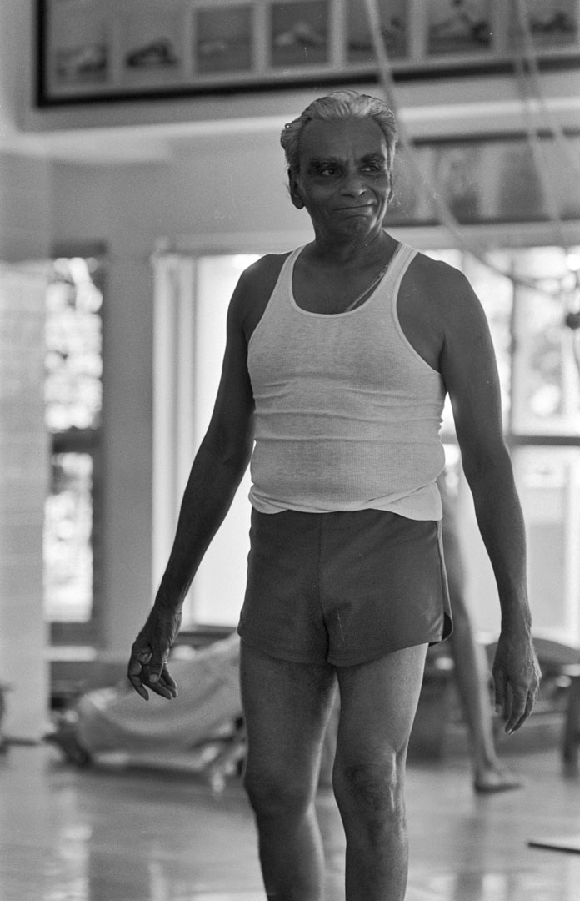
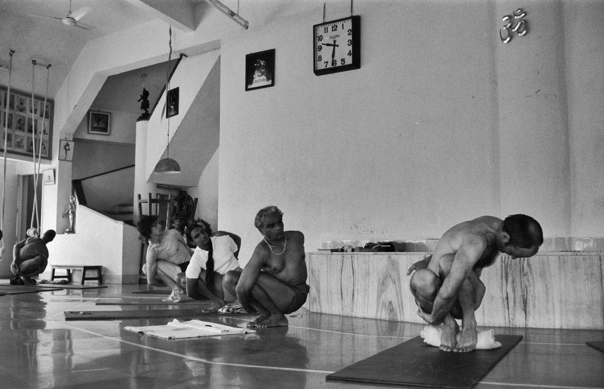
***Could you please send this out to people that could help in India? Perhaps you have a newsletter? I would love to have a lot of input from old students in India.
Hello - it's Julia Pedersen (a certified teacher from Sydney, Australia) here. Could you please help me find people who studied at RIMYI in the 1970s? I was first there in 1976 and over the next few years my husband and I took 250 black and white and 80 color slides of Guruji and RIMYI. I rediscovered these pictures after Guruji died, and them scanned to preserve them and posted most of them on Facebook. Many people, finding them evocative of that early era, suggested they be made into a book.
From: Julia Pedersen <juliapedersen@gmail.com>
Date: Mon, Oct 5, 2015 at 8:37 AM
Subject: Photo book of Guruji & RIMYI from the 70s
To: info@bksiyengar.com, Julia Pedersen <juliapedersen@gmail.com>
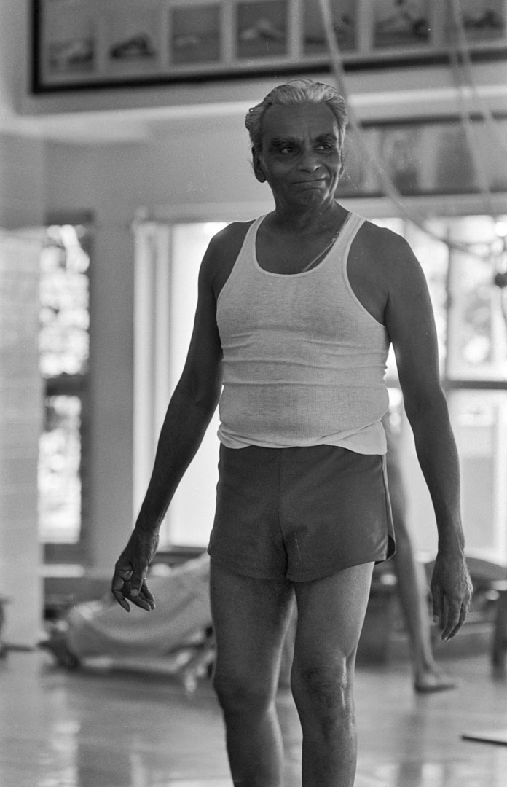
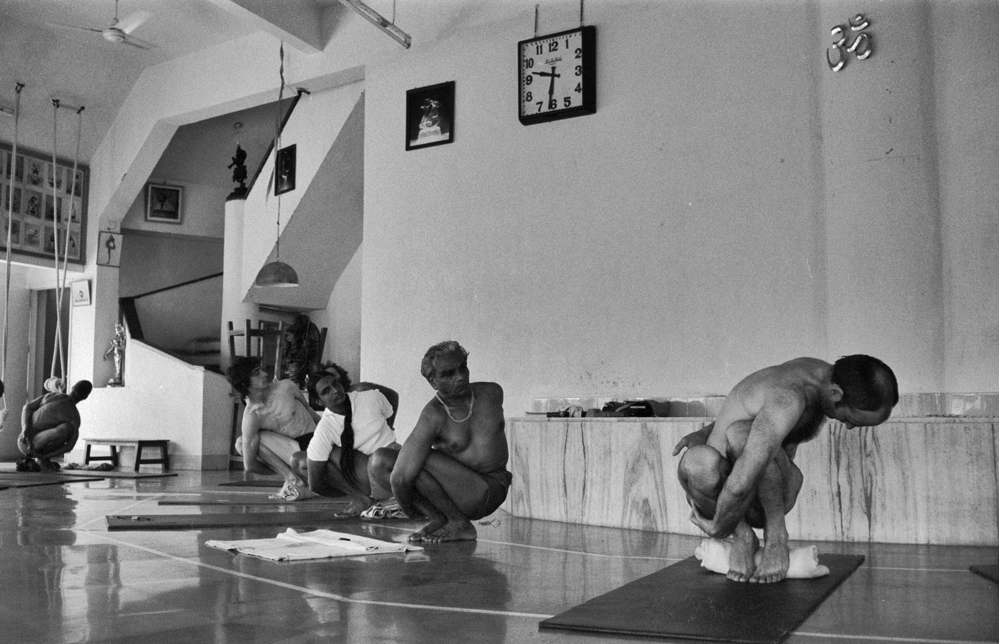
***Could you please send this out to people that could help in India? Perhaps you have a newsletter? I would love to have a lot of input from old students in India.
To Iyengar Yogis who studied at RIMYI in the 1970s.
***All proceeds from future book sales to go to Guruji's home town Bellur***
Could you please help me to do that? Help bring to life the RIMYI of those days by writing about your experiences in your own words. Let people know what it was like to be there in those early days a the institute. Richard Jonas, a certified teacher and writer from New York, has agreed to help with the project.
If you are interested in sharing your memories with us, please send me an email and I will contact you with further details (see the attachment enclosed here). Write as much or as little as you like. Even a couple of sentences may evoke what it was like to be there then.
Please write soon - the deadline is the end of this month, October 31rst!
I am going to Pune soon and promised Geetaji I would have a rough copy of the book by then.
I will be hoping to hear from you soon. Please reply if you were there in the 70s.
Thanks for your help in this project.
Kind regards,
Julia Pedersen
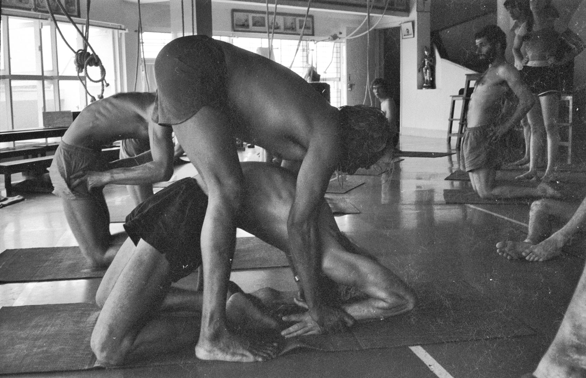
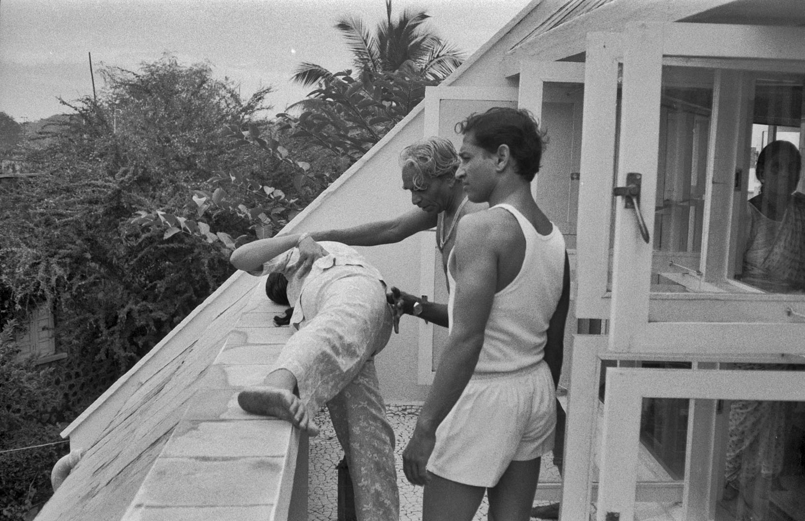
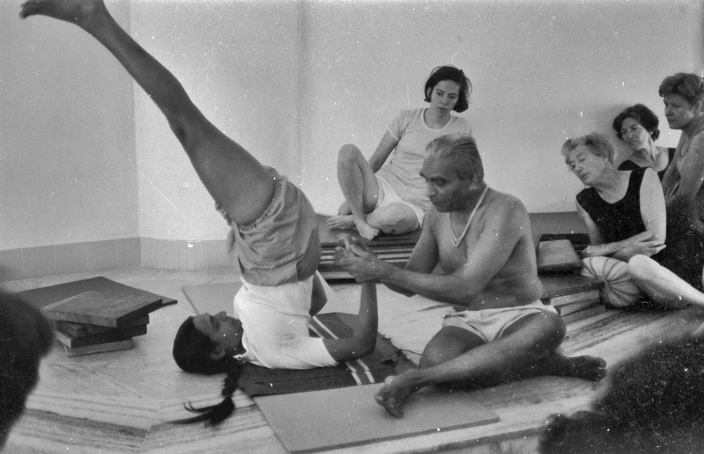
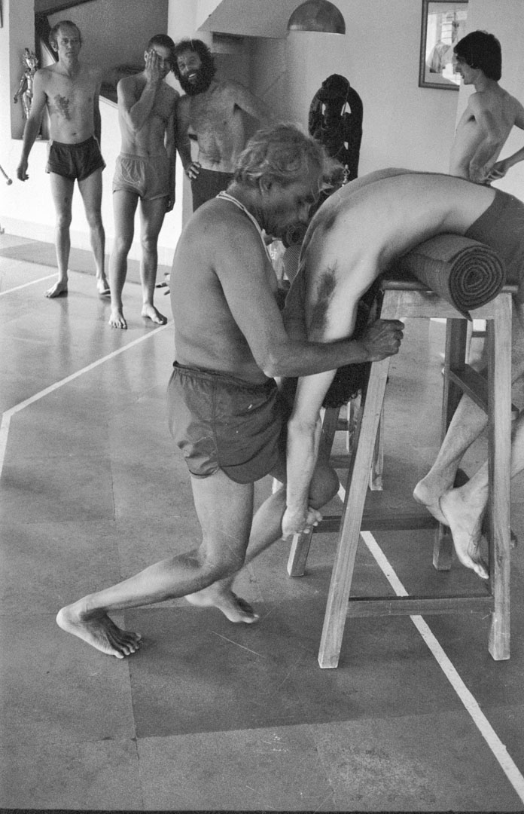
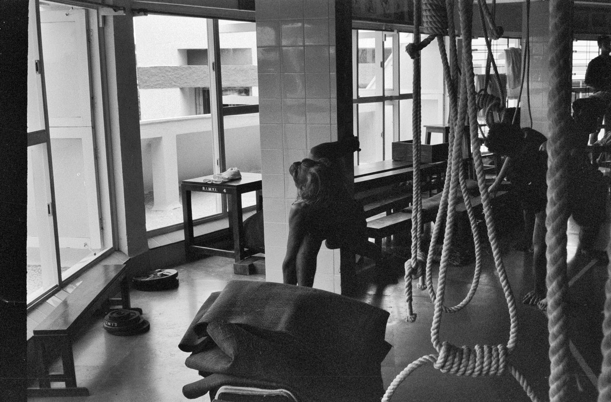
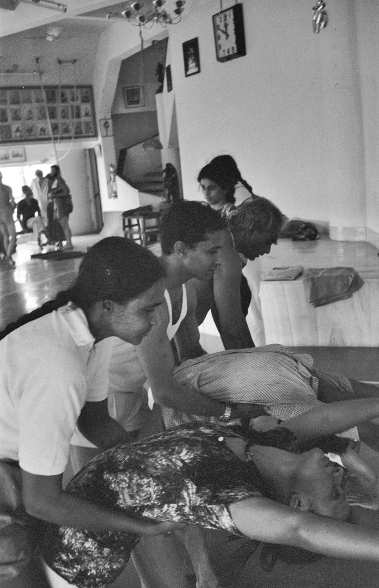

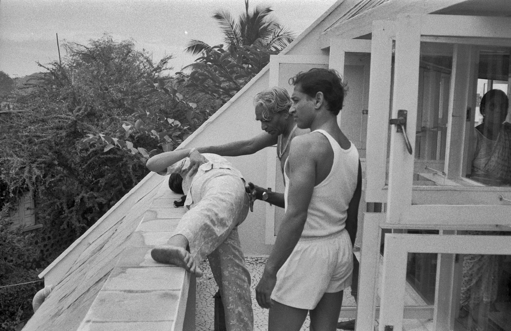
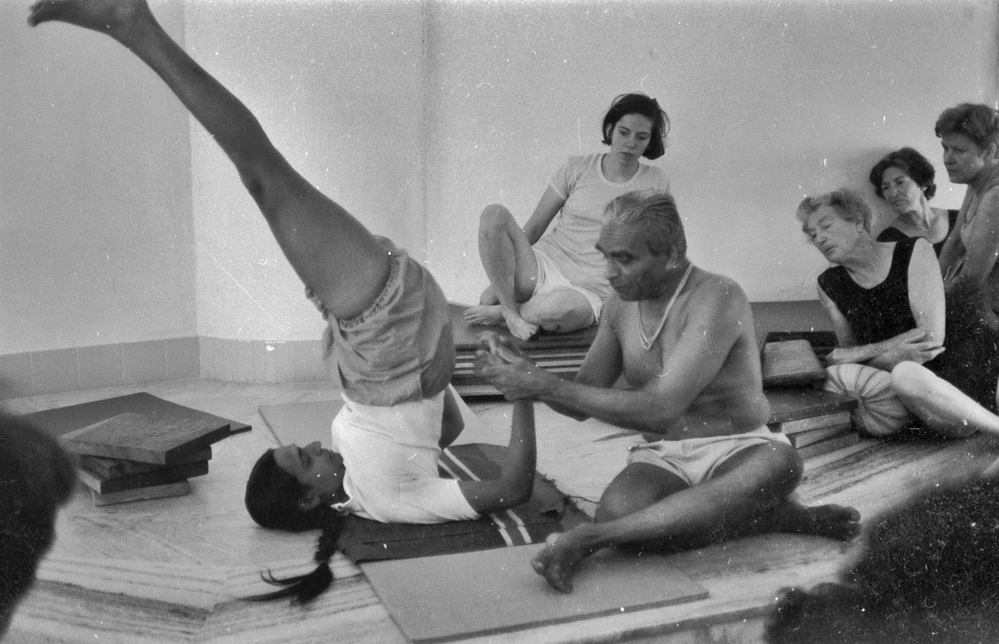
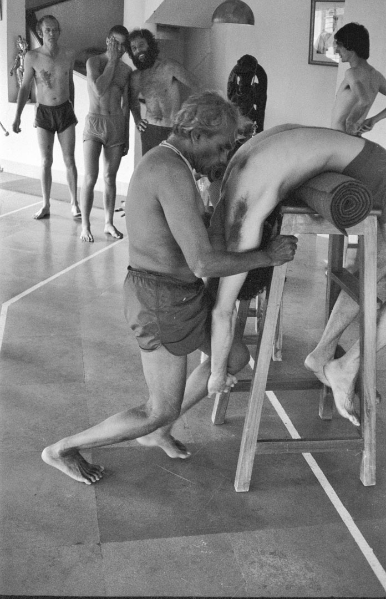
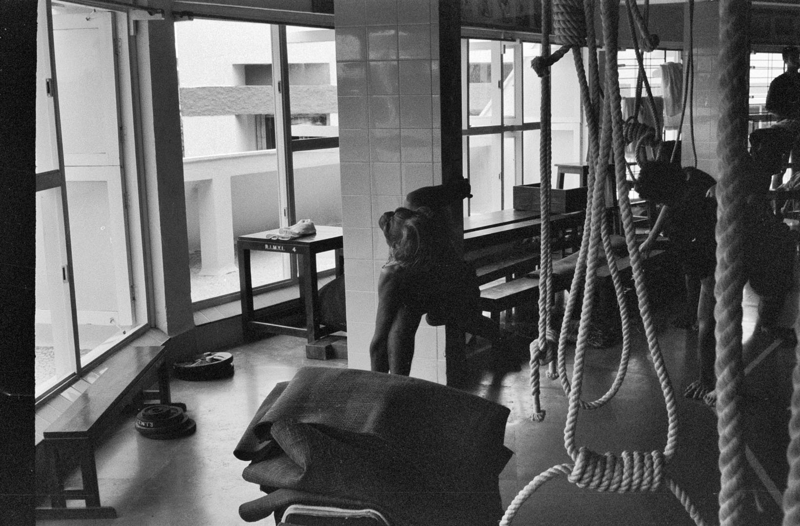
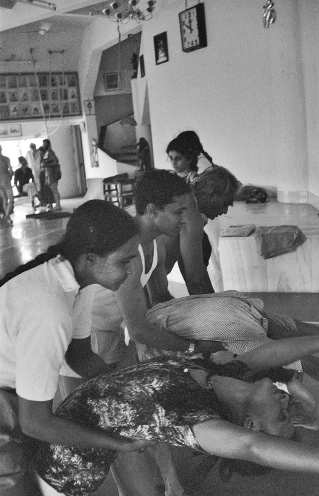
Glebe Iyengar Yoga
P.O. Box 500
Glebe, NSW 2037
Australia
Phone: +61466393999
Email: juliapedersen@gmail.com